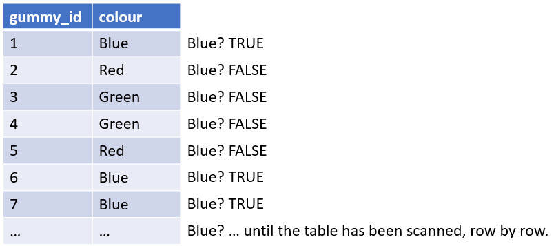
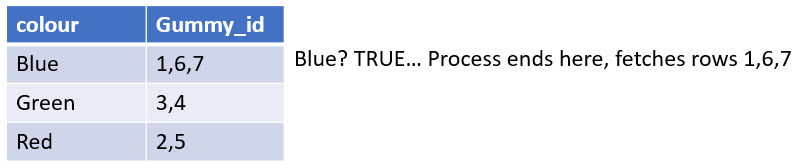

Relational databases (Part 3)
Learning objectives
Concepts
- Data types
- Constraints
Practical skills
- Create tables in MySQL Workbench
- Set data types and constraints for your fields.
- Generate your database documentation with MySQL Workbench (team assignment #2)
Data types
Every field you include in a table needs to have a data type. The data type is extremely important as it determines how the RDBMS will interpret, store, and potentially transform the data inserted in the tables. The data type also determines the types of operations that can be performed with the data it contains. The three basic data types are character, numeric, and dates and times.
Character data types
Character data types are very flexible because they can contain any combination of letters, numbers or symbols. The most common data types are CHAR, VARCHAR, NCHAR and NVARCHAR. The VAR prefix stands for variable, and the N prefix means national. You should use the CHAR data type when the length of the strings that you will store will not vary (ex., country codes, phone numbers, postal codes). The VARCHAR data type should be used when the length of the strings is expected to vary. Finally, the NCHAR and NVARCHAR should be used when the field is intended to store strings in multiple languages.
When declaring a string variable type, you must specify the maximum length of the strings the database will store. For example, a field called gummy_name with a variable type VARCHAR(10) will not be able to store gummy names with more than ten characters.
You shouldn’t simply declare very large CHAR types to be safe and never have to worry about your data is too large for the field because that will either inflate the size of your table for no reason (which can matter a lot if it stores millions or billions of records) or will decrease the performance of your queries.
More information on the string data types can be found in the MySQL documentation.
Numeric data types
The numeric data types store… you guessed it: numbers! You can use INT (for integer) or its variants for values that don’t require decimals. The only difference is the storage space they occupy and the range of value they can hold (see the summary in the table below). As for string data types, you want to use the smallest possible data type that can accommodate your data.
| Type | Storage (Bytes) | Minimum Value Signed | Minimum Value Unsigned | Maximum Value Signed | Maximum Value Unsigned |
|---|---|---|---|---|---|
| TINYINT | 1 | -127 | 0 | 127 | 255 |
| SMALLINT | 2 | -32768 | 0 | 32767 | 65535 |
| MEDIUMINT | 3 | -8388608 | 0 | 8388607 | 16777215 |
| INT | 4 | -2147483648 | 0 | 2147483647 | 4294967295 |
| BIGINT | 8 | -263 | 0 | 263-1 | 264-1 |
For values with decimals, you should use the FLOAT data type. However, the DECIMAL data type is preferred for financial data or other cases where having more than a certain number of decimals makes no sense (e.g., 2.3333$). The DECIMAL data type lets you specify the number of digits a value can have and how many of these digits are decimals. For instance, the DECIMAL(5,2) data type indicates that the field can contain values ranging from -999.99 to 999.99.
More information on the numeric data types can be found in the MySQL documentation.
Date and time
The different date and time data types that you can use in MySQL are presented in the following table.
| Data Type | Format | Range |
|---|---|---|
| DATE | “0000-00-00” | “1000-01-01” to “9999-12-31” |
| TIME | “00:00:00” | “-838:59:59” to “838:59:59” |
| DATETIME | “0000-00-00 00:00:00” | “1000-01-01 00:00:00.000000” to “9999-12-31 23:59:59.999999” |
| TIMESTAMP | “0000-00-00 00:00:00” | “1970-01-01 00:00:01.000000” to “2038-01-19 03:14:07.999999” |
| YEAR | 0000 | 1901 to 2155 |
As you might notice from the table, no double quotes are used for the year format. That is because years are stored as numbers. It also has a very narrow range of possible values that allows the year to be very memory efficient since only one byte is necessary to store a range of 255 numerical values (see the TINYINT specifications in the previous table.
The difference between DATETIME and TIMESTAMP is that the TIMESTAMP converts the value to UTC and is converted back into local time when retrieved. With the DATETIME format, values are stored and retrieved as is.
More details on the date and time formats can be found in the MySQL documentation.
Other data types
The supported data types vary for different RDBMS, but these systems are constantly evolving and expanding the data types they can handle. For example, possibly in response to the growing popularity of the JSON file format, MySQL now supports the JSON data type. More information on this data type and how to use it can be found in the MySQL documentation. You might remember that we played with the JSON format a little bit at the beginning of the course. However, please note that knowing how to use the JSON data type in MySQL is beyond the scope of the course. For our current purpose, it is enough to be aware of the fact that while MySQL databases are usually used for structured data, they are flexible tools that can deal with all kinds of semi-structured data formats (like JSON) and unstructured data (like plain text, and binary files like images, videos, etc.).
How MySQL handles data types
In this video, I show you how to connect to my server using the connection details that have been provided to you by email and how you can create tables, put data into them, and retrieve data from them. We will dig deeper into MySQL operations over the next few weeks, so don’t worry if, at this point, you are a bit overwhelmed with the code. The video’s main point is to show you what happens when you put different values in fields with different data types.
Constraints
SQL constraints are used to specify rules for data in a table. They are used to preserve the integrity of the database, ensure data quality, and prevent data loss. While you do not need to use constraints other than the PRIMARY KEY and the FOREIGN KEY ones for this course, it is helpful to know about constraints and what they do. Here is a list of constraints that are available in MySQL databases.
- PRIMARY KEY: As you already know, the PRIMARY KEY must be unique and cannot be empty. The RDBMS also automatically creates an index (explained below) on this field.
- NOT NULL: Specifies that this field must always contain a value and cannot be empty (NULL).
- UNIQUE: A field with a UNIQUE constraint cannot contain duplicate values.
- AUTO INCREMENT: These constraints can be used with numeric data types and are particularly useful for your primary keys. It means that whenever a new record is created, this field will automatically contain a value 1+the highest value contained in that field. This way, you don’t need to provide value for the field, and you don’t have to worry about duplication.
- GENERATED: This constraint allows you to automatically generate a value for the field upon creating a new record. It is similar to AUTO INCREMENT, except that you can decide how the value is generated, for instance, by concatenating the first_name and last_name column to generate a full_name value.
- FOREIGN KEY: the value inserted into a FOREIGN KEY must exist in the PRIMARY KEY field of the parent table. NULL values are allowed in FOREIGN KEY fields.
- CHECK: the check constraint is a very flexible constraint that allows you to specify the specific values that a field can contain. For example, you could set a CHECK constraint on the number of gummies in an order specifying that the value must be greater than 0.
- DEFAULT: This constraint defines a default value to be inserted in the field when a new record is created, and no value is provided for that specific field.
- INDEX: This constraint is used to create an index for the values of that field, which can dramatically increase the speed of your queries. Just like an index at the end of a book telling you on what page(s) you can find information about a particular concept or topic instead of having to look at each page to find those sections, the MySQL INDEX creates a list of records where each of the different values of that field can be found and stores that list into its memory, so that those records can be retrieved much faster. So, for example, if you have 50 different gummy records in your gummy table, 12 of which are red, 25 are blue, and 13 are green, you could create an index on the gummy_color table. The index would have one record for each colour (red., blue, green), each containing a list of the gummy_id that has that colour.
0.0.1 Index example
If you ask the database to retrieve the blue gummies from the gummy table and you do not have an inde on the colour column, it has to scan each row, to see the colour is “blue,” if the table as 1 million rows, then this verification has to be done 1 million times.
No index on the colour field of the gummy table

With an index on the colour field of the gummy table
If you ask the database to retrieve the blue gummies from the gummy table, and have an index on the colour column. The database scans the index until it finds the colour “blue” and and then fetches the rows of the gummy table with that are blue. If there are 50 possible colours, then the database has to scan between 1 and 50 rows (depending when it finds the value “blue”).

Documenting your database
Now that you have a complete database designed, with tables, fields with all the appropriate data types and constraints. You are ready to move to the next step: documentation.
Adequately documenting your database is crucial because it ensures that the users will be able to understand what tables contain, why they exist, and how to use your database. You already know (and have applied) best practices for table and field names. That likely reduces the need for your database users to refer to the documentation all the time, but it does not eliminate the need for it. Describing your tables and fields also helps ensure they are needed and well-designed. If you cannot describe the purpose of a table, it may be that it has, in fact, no purpose.
Here are a few simple rules to follow:
Clearly and concisely describe the tables and fields.
For tables only, your description should provide some indication of its purpose (why it is necessary).
Focus on the content of the tables or fields rather than how they will specifically be used or accessed and by whom.
Do not use examples in your descriptions.
Generating your database documentation automatically with MySQL workbench
A very powerful plugin for MySQL workbench allows you to generate a Markdown document with all the descriptions of your tables, fields, indexes, primary keys, foreign keys, etc.
Instructions on how to install and use the plugin can be found here. And in the following video I show you go through the installation process and show you how to use the plugin to easily generate beautiful documentation for your database.
Exercises
As an exercise for this week, I invite you to connect to your team’s database on the qsslab MySQL server (using the connection information that you received by email) and to experiment with data types and constraints by creating your tables, inserting data into those tables, and then retrieving the content of the tables to see how your data was stored. Because you cannot break the database and the worst thing that can happen is that your queries return an error, don’t be afraid to try crazy queries that you know should not work (for instance, storing the string “abcd” in a DATETIME field), just to see how SQL reacts. That said, please limit your queries to CREATE, INSERT, SELECT and DROP statements at this point.